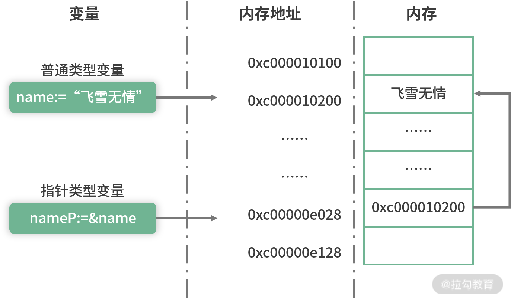

- 00 开篇词 Go 为开发者的需求设计，带你实现高效工作.md.html
- 01 基础入门：编写你的第一个 Go 语言程序.md.html
- 02 数据类型：你必须掌握的数据类型有哪些？.md.html
- 03 控制结构：if、for、switch 逻辑语句的那些事儿.md.html
- 04 集合类型：如何正确使用 array、slice 和 map？.md.html
- 05 函数和方法：Go 语言中的函数和方法到底有什么不同？.md.html
- 06 struct 和 interface：结构体与接口都实现了哪些功能？.md.html
- 07 错误处理：如何通过 error、deferred、panic 等处理错误？.md.html
- 08 并发基础：Goroutines 和 Channels 的声明与使用.md.html
- 09 同步原语：sync 包让你对并发控制得心应手.md.html
- 10 Context：你必须掌握的多线程并发控制神器.md.html
- 11 并发模式：Go 语言中即学即用的高效并发模式.md.html
- 12 指针详解：在什么情况下应该使用指针？.md.html
- 13 参数传递：值、引用及指针之间的区别？.md.html
- 14 内存分配：new 还是 make？什么情况下该用谁？.md.html
- 15 运行时反射：字符串和结构体之间如何转换？.md.html
- 16 非类型安全：让你既爱又恨的 unsafe.md.html
- 17 SliceHeader：slice 如何高效处理数据？.md.html
- 18 质量保证：Go 语言如何通过测试保证质量？.md.html
- 19 性能优化：Go 语言如何进行代码检查和优化？.md.html
- 20 协作开发：模块化管理为什么能够提升研发效能？.md.html
- 21 网络编程：Go 语言如何玩转 RESTful API 服务？.md.html
- 22 网络编程：Go 语言如何通过 RPC 实现跨平台服务？.md.html
- 23 结束语 你的 Go 语言成长之路.md.html
- 捐赠
12 指针详解：在什么情况下应该使用指针？
这节课起我将带你学习本专栏的第三模块：深入理解 Go 语言。这部分主要会为你讲解 Go 语言的高级特性，以及 Go 语言一些特性功能的底层原理。通过这部分的学习，你不光可以更好地使用 Go 语言，还会更深入地理解 Go 语言，比如理解你所使用的 slice 底层是如何实现的等。
什么是指针
我们都知道程序运行时的数据是存放在内存中的，而内存会被抽象为一系列具有连续编号的存储空间，那么每一个存储在内存中的数据都会有一个编号，这个编号就是内存地址。有了这个内存地址就可以找到这个内存中存储的数据，而内存地址可以被赋值给一个指针。
小提示：内存地址通常为 16 进制的数字表示，比如 0x45b876。
可以总结为：在编程语言中，指针是一种数据类型，用来存储一个内存地址，该地址指向存储在该内存中的对象。这个对象可以是字符串、整数、函数或者你自定义的结构体。
小技巧：你也可以简单地把指针理解为内存地址。
举个通俗的例子，每本书中都有目录，目录上会有相应章节的页码，你可以把页码理解为一系列的内存地址，通过页码你可以快速地定位到具体的章节（也就是说，通过内存地址可以快速地找到存储的数据）。
指针的声明和定义
在 Go 语言中，获取一个变量的指针非常容易，使用取地址符 & 就可以，比如下面的例子：
ch12/main.go
func main() {
name:="飞雪无情"
nameP:=&name//取地址
fmt.Println("name变量的值为:",name)
fmt.Println("name变量的内存地址为:",nameP)
}
我在示例中定义了一个 string 类型的变量 name，它的值为”飞雪无情”，然后通过取地址符 & 获取变量 name 的内存地址，并赋值给指针变量 nameP，该指针变量的类型为 *string。运行以上示例你可以看到如下打印结果：
name变量的值为: 飞雪无情
name变量的内存地址为: 0xc000010200
这一串 0xc000010200 就是内存地址，这个内存地址可以赋值给指针变量 nameP。
指针类型非常廉价，只占用 4 个或者 8 个字节的内存大小。
以上示例中 nameP 指针的类型是 *string，用于指向 string 类型的数据。在 Go 语言中使用类型名称前加 * 的方式，即可表示一个对应的指针类型。比如 int 类型的指针类型是 *int，float64 类型的指针类型是 *float64，自定义结构体 A 的指针类型是 *A。总之，指针类型就是在对应的类型前加 * 号。
下面我通过一个图让你更好地理解普通类型变量、指针类型变量、内存地址、内存等之间的关系。

（指针变量、内存地址指向示意图）
上图就是我刚举的例子所对应的示意图，从图中可以看到普通变量 name 的值“飞雪无情”被放到内存地址为 0xc000010200 的内存块中。指针类型变量也是变量，它也需要一块内存用来存储值，这块内存对应的地址就是 0xc00000e028，存储的值是 0xc000010200。相信你已经看到关键点了，指针变量 nameP 的值正好是普通变量 name 的内存地址，所以就建立指向关系。
小提示：指针变量的值就是它所指向数据的内存地址，普通变量的值就是我们具体存放的数据。
不同的指针类型是无法相互赋值的，比如你不能对一个 string 类型的变量取地址然后赋值给 *int指针类型，编译器会提示你 Cannot use ‘&name’ (type *string) as type *int in assignment。
此外，除了可以通过简短声明的方式声明一个指针类型的变量外，也可以使用 var 关键字声明，如下面示例中的 var intP *int 就声明了一个 *int 类型的变量 intP。
var intP *int
intP = &name //指针类型不同，无法赋值
可以看到指针变量也和普通的变量一样，既可以通过 var 关键字定义，也可以通过简短声明定义。
小提示：通过 var 声明的指针变量是不能直接赋值和取值的，因为这时候它仅仅是个变量，还没有对应的内存地址，它的值是 nil。
和普通类型不一样的是，指针类型还可以通过内置的 new 函数来声明，如下所示：
intP1:=new(int)
内置的 new 函数有一个参数，可以传递类型给它。它会返回对应的指针类型，比如上述示例中会返回一个 *int 类型的 intP1。
指针的操作
在 Go 语言中指针的操作无非是两种：一种是获取指针指向的值，一种是修改指针指向的值。
首先介绍如何获取，我用下面的代码进行演示：
nameV:=*nameP
fmt.Println("nameP指针指向的值为:",nameV)
可以看到，要获取指针指向的值，只需要在指针变量前加 * 号即可，获得的变量 nameV 的值就是“飞雪无情”，方法比较简单。
修改指针指向的值也非常简单，比如下面的例子：
*nameP = "公众号:飞雪无情" //修改指针指向的值
fmt.Println("nameP指针指向的值为:",*nameP)
fmt.Println("name变量的值为:",name)
对 *nameP 赋值等于修改了指针 nameP 指向的值。运行程序你将看到如下打印输出：
nameP指针指向的值为: 公众号:飞雪无情
name变量的值为: 公众号:飞雪无情
通过打印结果可以看到，不光 nameP 指针指向的值被改变了，变量 name 的值也被改变了，这就是指针的作用。因为变量 name 存储数据的内存就是指针 nameP 指向的内存，这块内存被 nameP 修改后，变量 name 的值也被修改了。
我们已经知道，通过 var 关键字直接定义的指针变量是不能进行赋值操作的，因为它的值为 nil，也就是还没有指向的内存地址。比如下面的示例：
var intP *int
*intP =10
运行的时候会提示 invalid memory address or nil pointer dereference。这时候该怎么办呢？其实只需要通过 new 函数给它分配一块内存就可以了，如下所示：
var intP *int = new(int)
//更推荐简短声明法，这里是为了演示
//intP:=new(int)
指针参数
假如有一个函数 modifyAge，想要用来修改年龄，如下面的代码所示。但运行它，你会看到 age 的值并没有被修改，还是 18，并没有变成 20。
age:=18
modifyAge(age)
fmt.Println("age的值为:",age)
func modifyAge(age int) {
age = 20
}
导致这种结果的原因是 modifyAge 中的 age 只是实参 age 的一份拷贝，所以修改它不会改变实参 age 的值。
如果要达到修改年龄的目的，就需要使用指针，现在对刚刚的示例进行改造，如下所示：
age:=18
modifyAge(&age)
fmt.Println("age的值为:",age)
func modifyAge(age *int) {
*age = 20
}
也就是说，当你需要在函数中通过形参改变实参的值时，需要使用指针类型的参数。
指针接收者
指针的接收者在[“第 6 讲| struct 和 interface：结构体与接口都实现了哪些功能？”]中有详细介绍，你可以再复习一下。对于是否使用指针类型作为接收者，有以下几点参考：
- 如果接收者类型是 map、slice、channel 这类引用类型，不使用指针；
- 如果需要修改接收者，那么需要使用指针；
- 如果接收者是比较大的类型，可以考虑使用指针，因为内存拷贝廉价，所以效率高。
所以对于是否使用指针类型作为接收者，还需要你根据实际情况考虑。
什么情况下使用指针
从以上指针的详细分析中，我们可以总结出指针的两大好处：
- 可以修改指向数据的值；
- 在变量赋值，参数传值的时候可以节省内存。
不过 Go 语言作为一种高级语言，在指针的使用上还是比较克制的。它在设计的时候就对指针进行了诸多限制，比如指针不能进行运行，也不能获取常量的指针。所以在思考是否使用时，我们也要保持克制的心态。
我根据实战经验总结了以下几点使用指针的建议，供你参考：
- 不要对 map、slice、channel 这类引用类型使用指针；
- 如果需要修改方法接收者内部的数据或者状态时，需要使用指针；
- 如果需要修改参数的值或者内部数据时，也需要使用指针类型的参数；
- 如果是比较大的结构体，每次参数传递或者调用方法都要内存拷贝，内存占用多，这时候可以考虑使用指针；
- 像 int、bool 这样的小数据类型没必要使用指针；
- 如果需要并发安全，则尽可能地不要使用指针，使用指针一定要保证并发安全；
- 指针最好不要嵌套，也就是不要使用一个指向指针的指针，虽然 Go 语言允许这么做，但是这会使你的代码变得异常复杂。
总结
为了使编程变得更简单，指针在高级的语言中被逐渐淡化，但是它也的确有自己的优势：修改数据的值和节省内存。所以在 Go 语言的开发中我们要尽可能地使用值类型，而不是指针类型，因为值类型可以使你的开发变得更简单，并且也是并发安全的。如果你想使用指针类型，就要参考我上面讲到的使用指针的条件，看是否满足，要在满足和必须的情况下才使用指针。
这节课到这里就要结束了，在这节课的最后同样给你留个思考题：指向接口的指针是否实现了该接口？为什么？思考后可以自己写代码验证下。
© 2019 - 2023 Liangliang Lee. Powered by gin and hexo-theme-book.